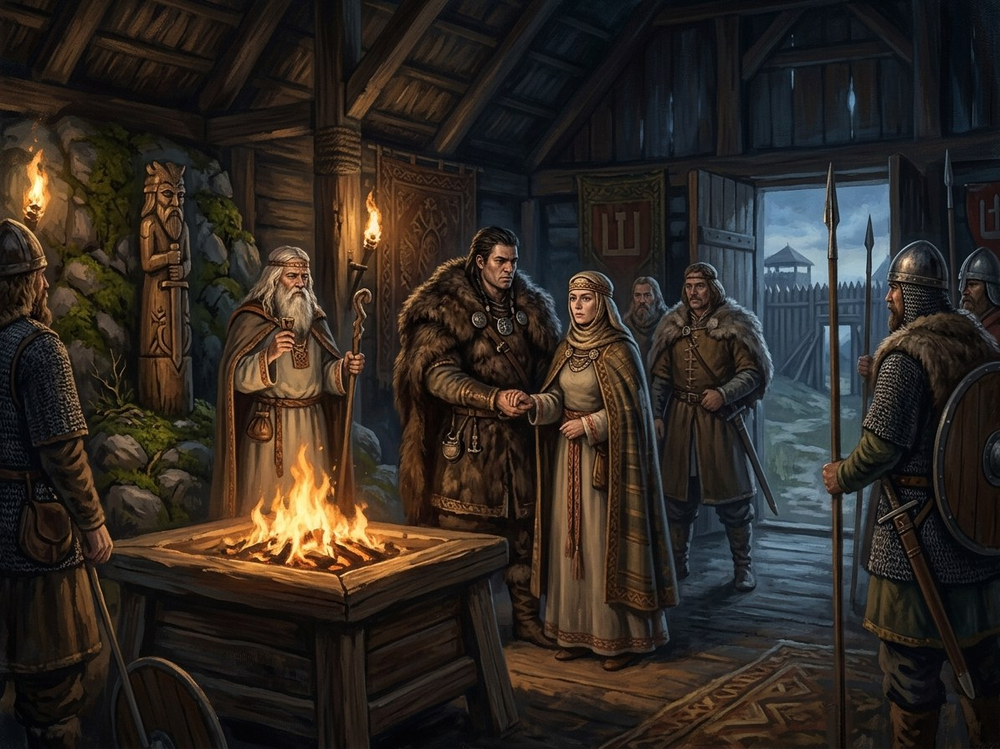

Kęstutis marries Birutė¶
What the chronicles say [Historical record]¶
Tradition dates the marriage of Kęstutis and Birutė to about 1350 (the English Wikipedia says c. 1344; the saga picks 1349) and the birth of Vytautas to about 1350 (a minority puts it at 1354–55). The story that she was a Palanga vaidilutė, a priestess of the sacred fire, whom Kęstutis carried off, rests on the 16th-century chronicle tradition and is open to question. His elder sons Vaidotas and Butautas belonged to an earlier marriage. Kęstutis’s later oath to Louis of Hungary (1351) and the 1361 capture are separate events. See Wikipedia, Birutė.
Kęstutis marries Birutė

Kęstutis marries Birutė · event¶
Type |
event |
Years |
1350 |
Status |
Historical record |
Book |
|
Note |
Kęstutis abducts and marries Birutė, sacred vaidilutė of Palanga (c. 1350). |
Where: Palanga (on the map)
What really happened [The saga’s invention]¶
Birutė, sworn at thirteen to the shore-fire, will not give herself to any man. The old priestess, the Amber Queen’s vessel, tells her: “Then don’t give. Be taken.” A vow not to give herself is not broken if she is carried off. Birutė struggles loudly where the fishermen can see, so that the chroniclers have their abduction and the gods their letter kept. Palanga’s flame, the second flame of the Pact, needs a husband for its last keeper. The old woman dies on the shore in the autumn. At Senieji Trakai the spinners of Laima sit on the sill when Vytautas is born in 1350: a crown will travel toward him all his life; he will be baptised three times; he will outlive every heir. Birutė says “Dar ne”, and Laima: for “not yet” you pay.
Consequences¶
The marriage brings the amber-priestess line into the Gediminids and gives Vytautas the pebble; it also seeds the 1365 treason of Butautas.
Dramatisation¶
Book VI ch. 10 “Palangos Ugnis” (Birutė; April 1349), ch. 11 “Būk Paimta” (the old priestess and Birutė; spring and summer 1349), ch. 12 “Laima prie Lopšio” (Birutė; spring 1349 to February 1350; the birth in Senieji Trakai).
Connections¶
graph LR
birute["Birutė"]
ev_marriage["Kęstutis marries Birutė"]
kestutis["Kęstutis"]
palanga["Palanga"]
ev_marriage -->|Location| palanga
kestutis -->|Took part in| ev_marriage
birute -->|Took part in| ev_marriage
style ev_marriage stroke-width:3px